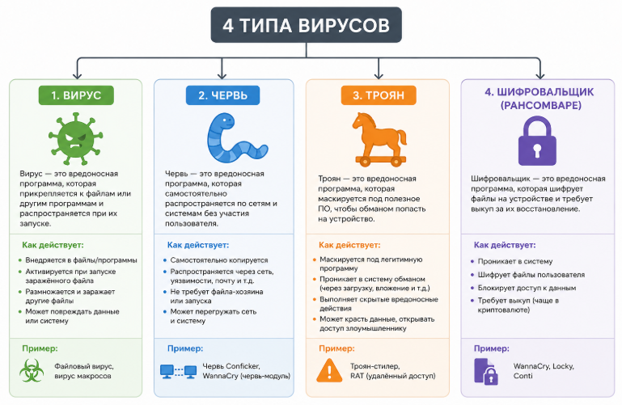
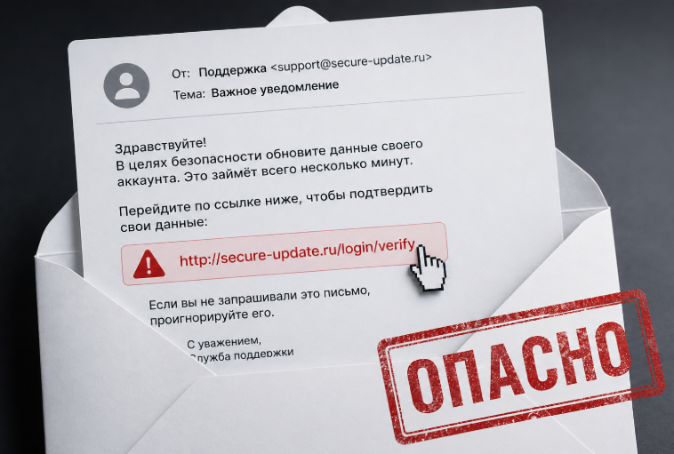
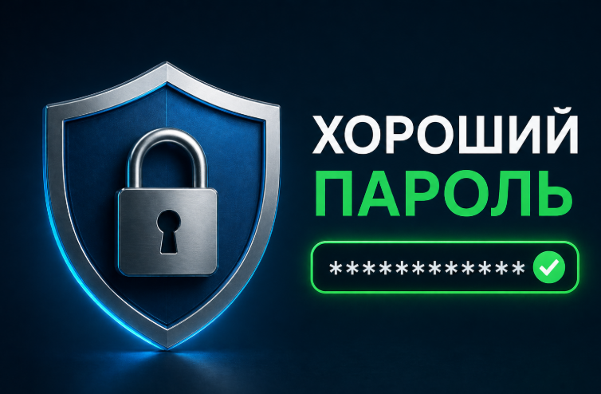
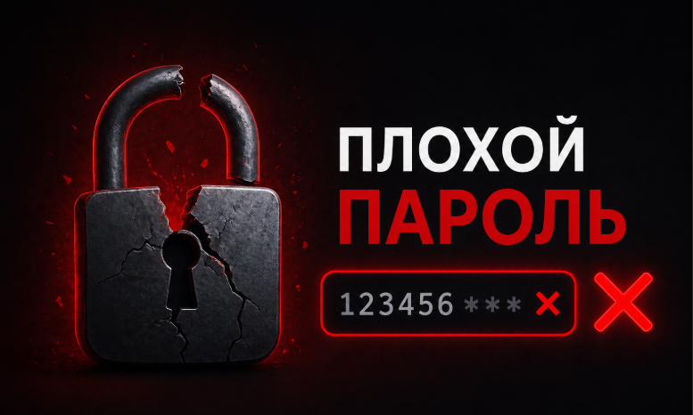
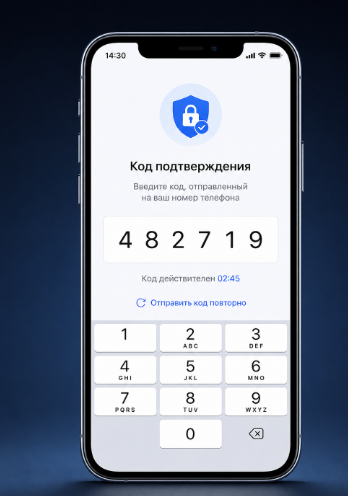
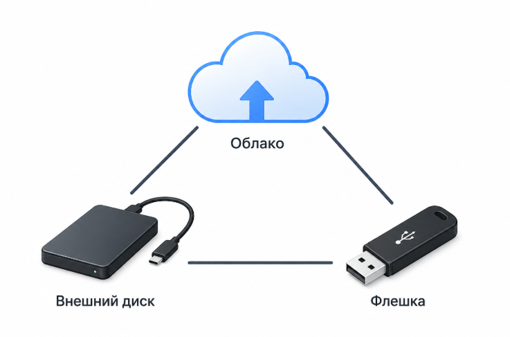
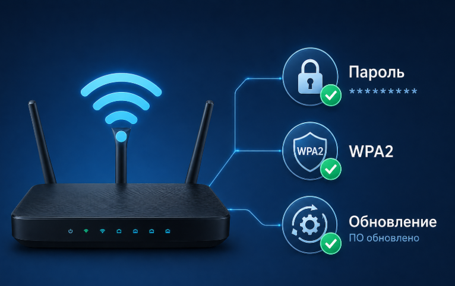

Добро пожаловать в Школу информационной безопасности
Этот сайт создан, чтобы каждый — от школьника до пенсионера — мог научиться защищать себя в интернете. Простым языком, с картинками и схемами.
О проекте
Автор: Сорокина Анастасия Евгеньевна
Этот образовательный проект создан для того, чтобы сделать информационную безопасность доступной для всех. Никакой сложной терминологии — только понятные объяснения, живые примеры и наглядные схемы.
Я верю, что каждый человек может защитить свои данные, если будет знать простые правила. Изучайте, запоминайте и будьте в безопасности!
Что вы узнаете с помощью этого сайта
Что такое вирусы и как от них защититься Вирусы, черви, трояны, шифровальщики — разберём каждую угрозу
Как не попасться на уловки мошенников Фишинг, социальная инженерия, телефонные звонки — учимся распознавать
Как создавать надёжные пароли И почему нельзя везде использовать один и тот же пароль
Что такое двухфакторная аутентификация И почему она спасает ваши аккаунты даже при краже пароля
Как обезопасить свой Wi-Fi Настройки роутера, VPN, HTTPS — защищаем домашнюю сеть
Как защитить свои данные Шифрование, резервное копирование, безопасное удаление файлов
Как устроен курс
5 разделов с главами→Схемы и картинки→Тест после раздела→Итоговый экзамен
В каждом разделе вы найдёте подробные объяснения в виде простых текстов, наглядные схемы, места для картинок, а в конце — тест для проверки знаний. После изучения всех разделов вас ждёт итоговый тест из 30 вопросов.
Изучайте в своём темпе, возвращайтесь к сложным темам, пересдавайте тесты — всё для вашей безопасности в интернете.
Кибербезопасность: защита от цифровых врагов
1.1 Компьютер, интернет и угрозы
Компьютер или смартфон — ваши устройства. Интернет — огромная сеть, соединяющая миллионы устройств. Хакеры могут пытаться украсть ваши данные через интернет.
Ваше устройство⇄Интернет⇄Сервер (сайт)
1.2 Четыре типа вредоносных программ

Картинка не найдена. Файл: images/virus-types.png (можно добавить)
Вирус Прилипает к полезным программам, заражает файлы
Червь Сам распространяется по сети, без вашего действия
Троян Притворяется полезной программой, ворует данные
Шифровальщик Блокирует файлы и требует выкуп
Защита: установите антивирус, не скачивайте файлы с подозрительных сайтов, не открывайте вложения от незнакомцев.
1.3 Фишинг – кража паролей

Картинка не найдена. Файл: images/phishing-letter.png (можно добавить)
Письмо от банка→Поддельный сайт→Кража пароля
Признаки фишинга: странный адрес отправителя, орфографические ошибки, требование срочных действий. Никогда не переходите по ссылкам из подозрительных писем. Лучше сами наберите адрес сайта в браузере.
1.4 Публичный Wi-Fi
Картинка не найдена. Файл: images/public-wifi-cafe.png (можно добавить)
В кафе, аэропорту, торговом центре злоумышленник может создать фальшивую точку доступа и перехватить ваши пароли. Защита: используйте VPN на публичных сетях.
Тест: Кибербезопасность
Информационная безопасность
2.1 Три кита безопасности (триада CIA)
Конфиденциальность Доступ только тем, кому разрешено
Целостность Данные нельзя подделать или изменить
Доступность Данные всегда под рукой, когда нужны
2.2 Надёжные пароли


Картинки не найдены: password-good.png, password-bad.png (можно добавить)
Хороший пароль: КотСъелПеченьки!2025≠Плохие: 123456, qwerty, дата рождения
Используйте менеджер паролей (Bitwarden, KeePass). Он запоминает сложные пароли за вас. Вам нужно запомнить только один мастер-пароль.
2.3 Двухфакторная аутентификация (2FA)

Картинка не найдена: two-factor-phone.png (можно добавить)
Пароль+Код из телефона→Доступ открыт
Даже если хакер украдёт ваш пароль, без кода из телефона он не сможет войти в аккаунт. Включите 2FA везде, где можно: почта, соцсети, банки.
2.4 Резервное копирование (правило 3-2-1)

Картинка не найдена: backup-devices.png (можно добавить)
3 копии данных
2 разных носителя (диск + облако)
1 копия вне дома
Регулярно делайте бэкапы фотографий, документов, важных файлов. Это спасёт вас от вирусов-шифровальщиков и поломки диска.
Тест: Инфобезопасность
Сетевая защита
3.1 Брандмауэр (файрвол)
Интернет→Брандмауэр (фильтр)→Ваш компьютер
Брандмауэр — это программа, которая следит за входящим и исходящим трафиком и блокирует подозрительные подключения. Встроен в Windows и macOS, не отключайте его.
3.2 VPN – зашифрованный туннель
Картинка не найдена: vpn-diagram.png (можно добавить)
Ваш компьютер===🔒===VPN-сервер→Интернет
VPN создаёт зашифрованный туннель, скрывая ваш реальный IP-адрес. Обязателен в публичных Wi-Fi сетях.
3.3 HTTPS и зелёный замочек
Безопасно: https:// + замок
Небезопасно: http:// (без замка)
Всегда проверяйте значок замка в адресной строке. Если замка нет — не вводите пароли, логины, номера карт.
3.4 Безопасность домашнего Wi-Fi

Картинка не найдена: router-settings.png (можно добавить)
1. Сменить пароль роутера
2. Включить WPA2/WPA3
3. Отключить WPS
4. Обновлять прошивку
Тест: Сетевая защита
Защита данных: шифрование и безопасное хранение
4.1 Что такое шифрование
Привет, мир!→🔒→G$#kLp@2!qZ
Шифрование превращает ваши данные в секретный код. Прочитать их можно только с помощью специального ключа (пароля). Даже если злоумышленник украдёт зашифрованный файл — он не увидит ничего, кроме бессмысленного набора символов.
4.2 Шифрование диска
BitLocker (Windows) и FileVault (macOS) шифруют весь диск. Если ноутбук украдут, данные не прочитают без пароля.
4.3 Безопасное удаление
Обычное удаление не стирает файлы — их можно восстановить. Используйте программы-шредеры: Eraser, BleachBit. Перед продажей компьютера или флешки обязательно делайте полную очистку.
4.4 Персональные данные
Персональные данные: ФИО, паспорт, СНИЛС, адрес, телефон, ИНН. Не публикуйте их в открытом доступе. В облаке храните только зашифрованными.
Тест: Защита данных
Безопасность в повседневной жизни
5.1 Телефонные мошенники
Картинка не найдена: phone-fraud.png (можно добавить)
Золотое правило: никогда и никому не сообщайте код из СМС, PIN, CVV (три цифры на обороте карты). Настоящий банк не спрашивает эти данные.
Положите трубку
Перезвоните в банк по номеру с карты
Не верьте звонкам о "родственнике в беде"
5.2 Что делать при взломе (план действий)
1. Сменить пароль
2. Выйти из всех устройств
3. Включить 2FA
4. Проверить антивирусом
5. Предупредить друзей
5.3 Цифровая гигиена (полезные привычки)
Уникальные пароли для каждого сервиса — храните их в менеджере паролей
Включите двухфакторную аутентификацию везде, где возможно
Регулярно обновляйте программы и операционную систему
Не открывайте подозрительные ссылки и вложения в письмах
Не публикуйте в соцсетях паспорт, адрес дома, фото билетов и пропусков
Разговаривайте с детьми о безопасности в интернете, настройте родительский контроль